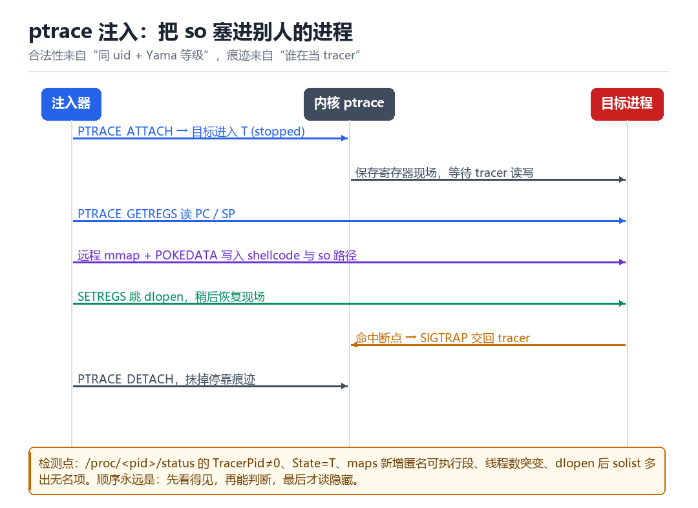

Android ptrace 原理
ptrace 加载 so、特征与检测
注入的“祖师爷”手法：让别人的进程替你执行你的代码。
7.1 ptrace 能做什么
ptrace 是内核提供的一套调试接口：一个进程（tracer）可以附加到另一个进程（tracee）上，读它的寄存器、读写它的内存、单步执行、拦截信号。合法的调试器、崩溃收集、以及各种注入器，都建立在它上面。

7.2 注入的七步
PTRACE_ATTACH：目标被停下，状态变成 T (stopped)，TracerPid变成注入器的 pid。PTRACE_GETREGS：读出 PC、SP 等寄存器，记下现场。- 在目标里找到
dlopen/mmap/__system_property_get等函数的地址（可借助/proc/pid/maps算偏移）。 PTRACE_POKEDATA往目标栈或空闲区写入 shellcode 与参数字符串。PTRACE_SETREGS把 PC 指向 shellcode，继续执行。- shellcode 调用
dlopen加载目标 so，然后触发一个断点（BRK或非法指令）。 PTRACE_DETACH恢复现场并断开，目标继续跑，so 已经在自己进程里了。
7.3 会留下什么痕迹
| 痕迹 | 在哪看 | 说明 |
|---|---|---|
| TracerPid ≠ 0 | /proc/<pid>/status | 最直接，注入期间必然存在 |
| State = T | /proc/<pid>/stat | 被停下的进程 |
| 匿名可执行段 | /proc/<pid>/maps | shellcode 与加载的 so |
| 线程数突变 | /proc/<pid>/task | agent 自己的线程 |
| solist 无名项 | 遍历 link_map | dlopen 的副作用 |
| seccomp 拦截 | dmesg / 返回值 | 部分系统禁止 ptrace |
7.4 Yama 与 SELinux：两道门一起关
很多人把“ptrace 失败”归因于某一个机制，实际上它是两道门叠加的结果，而且两道门都没被放宽。
| 机制 | 默认状态 | 允许什么 |
|---|---|---|
| Yama（ptrace_scope） | Android 上仍是 1（未放宽到 0） | 只能 attach 自己的后代；或对方主动 PR_SET_PTRACER 授权 |
| SELinux | 强制访问控制，按域判定 | 即使同为 uid，跨域 ptrace 也会被拒（avc: denied { ptrace }） |
所以正确的因果是：跨进程注入之所以需要 root，不是“因为要跨 uid”，而是“因为需要一个被允许 ptrace 的域”——root 只是获得那个域的手段。同一 App 内部的“自我调试”之所以可行，也不是因为 Yama 放宽了，而是因为它满足“自己/后代”这一条，且同域内的 SELinux 规则通常允许。
# 检测：轮询自己的 TracerPid
while (1) {
FILE* f = fopen("/proc/self/status", "r");
// 解析 TracerPid 行，非 0 即报警
fclose(f);
usleep(200000);
}
# 反检测：注入后立刻 detach，让 TracerPid 归零7.5 本章自测
- ptrace 注入的七个步骤，哪一步最容易失败？为什么？
- 为什么“注入后 detach”不能消除所有痕迹？
- Yama 的 level 0/1/2 分别意味着什么？
- 如果目标是 64 位进程，但注入器是 32 位，会发生什么？
7.6 深入：为什么要“注入 + 自卸载”
长期挂着一个 TracerPid 是最糟的形态。所以成熟的注入器都会做“注入后立刻 detach，让 so 自己跑”。这样目标进程恢复常态，/proc/self/status 干净了——但代价是失去了对目标的直接控制。
| 形态 | TracerPid | 控制力 | 稳定性 |
|---|---|---|---|
| 全程 attach | 始终非 0 | 最强 | 最差（目标被停） |
| 注入后 detach | 归零 | 中（靠 so 自己） | 好 |
| 门控注入 | 短暂非 0 | 强（早期介入） | 中 |
7.7 实战：手写一个最小注入器要做的事
- 找到目标 pid（
ps -A或遍历/proc）。 PTRACE_ATTACH+waitpid等它停下。PTRACE_GETREGS，记下 pc / sp / 寄存器现场。- 读
/proc/pid/maps，算libc.so基址，加dlsym偏移得到dlopen地址。 - 把 so 路径字符串与一小段 shellcode 写入目标栈（
PTRACE_POKEDATA）。 PTRACE_SETREGS把 pc 指向 shellcode，PTRACE_CONT。- 等断点（
BRK #0）触发，读返回值确认加载成功。 - 恢复全部寄存器，
PTRACE_DETACH。
7.8 64 位 / 32 位混合的坑
在 64 位系统上跑 32 位 App 是常见的。此时注入器必须也是 32 位，或者使用能够处理混合位宽的接口。表现为“注入成功但 so 加载失败”或“一 attach 就崩”，排查时先确认位宽。
file /system/bin/app_process64
cat /proc/<pid>/exe
# 或者直接看 maps 里是不是 /system/lib64 还是 /system/lib7.9 原理推演：ptrace 的“双向可见性”
ptrace 有一个容易被忽略的性质：它不只是“tracer 能看到 tracee”，tracee 也能看到 tracer 的存在（通过 TracerPid、通过信号行为、通过 wait 语义）。
| 观测方 | 能看到什么 | 怎么用 |
|---|---|---|
| tracer | 寄存器、内存、信号 | 注入、调试 |
| tracee | TracerPid、被暂停、信号被拦截 | 反调试 |
这种双向性是设计使然（调试器需要被调试者配合），但它也意味着“隐蔽注入”在原理上就有上限：你不可能让 tracee 完全不知道自己被跟踪，只能缩短“被跟踪”的时间窗口。
7.10 数据细节：一次注入的 syscall 序列
ptrace(PTRACE_ATTACH, pid, 0, 0)
waitpid(pid, &status, 0) # 等 SIGSTOP
ptrace(PTRACE_GETREGS, pid, 0, ®s)
open("/proc/pid/maps"); read() # 算地址
ptrace(PTRACE_POKEDATA, pid, addr, data) # 写 shellcode
ptrace(PTRACE_SETREGS, pid, 0, ®s) # 改 PC
ptrace(PTRACE_CONT, pid, 0, 0)
waitpid(pid, &status, 0) # 等断点
ptrace(PTRACE_DETACH, pid, 0, 0)这条序列里的每一步都可以被观测（比如通过 seccomp 或 LSM 的审计）。所以“留痕最少”的注入器，会尽量把这串调用压缩到最短时间，甚至用一次 PTRACE_SEIZE + PTRACE_INTERRUPT 完成。